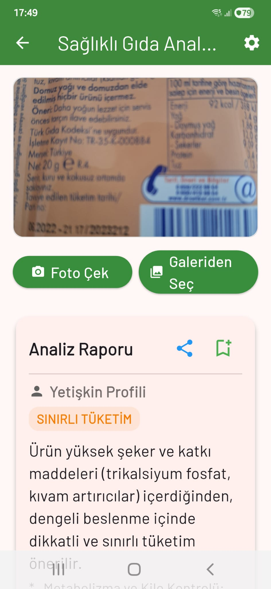
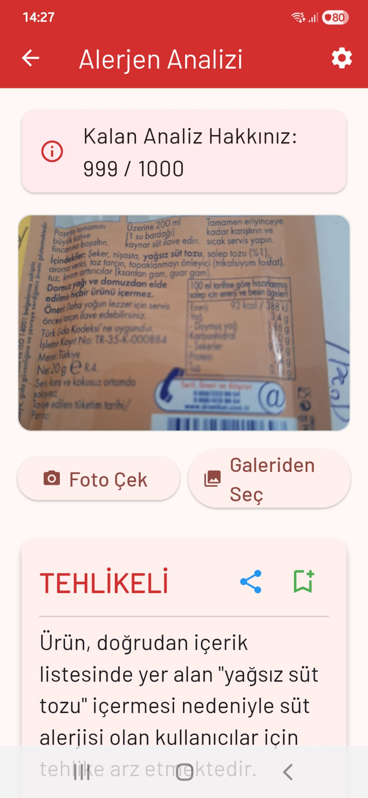
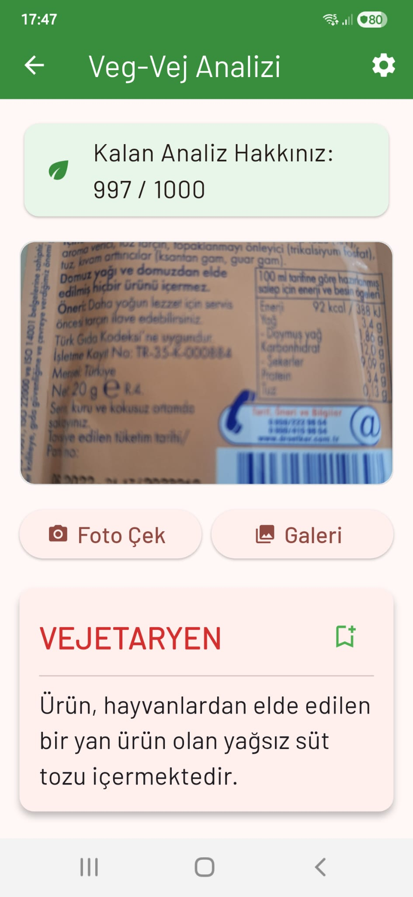
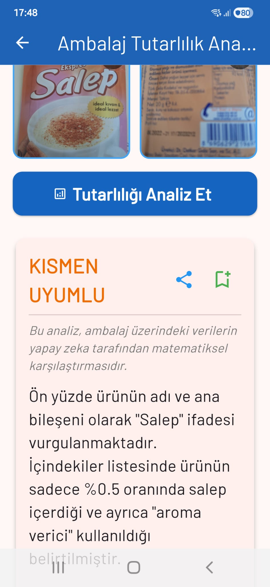
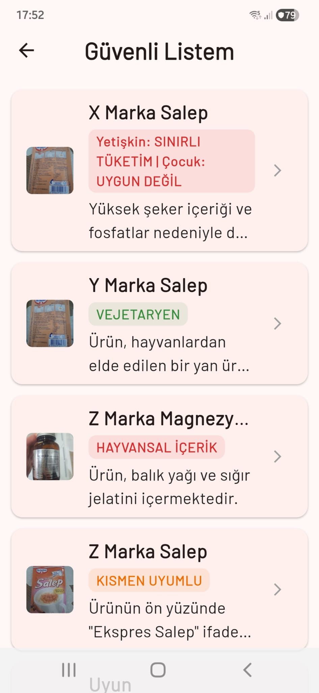

Sağlıklı Gıda Analizi
Yetişkin ve çocuklara özel sağlıklı gıda filtrelemeyi sağlayan güçlü analiz aracı. İçeriklerin genel sağlık skorunu anında görün.

Alerjen Analizi
Alerjisi olanlara özel analiz aracı. Etiketlerde gizlenmiş veya çapraz bulaşma riski taşıyan potansiyel alerjenleri tespit edin.

Vegan / Vejetaryen Analizi
Vegan ve vejetaryen hassasiyetleri olanlara özel analiz aracı. Hayvansal kaynaklı içerikleri kolayca filtreleyin.

Ambalaj Tutarlılık Analizi
Ambalajların üzerindeki sloganların kontrolünü sağlayın. Ön yüzdeki vaatler ile arka yüzdeki gerçekleri karşılaştırın.

Helal Analizi
Helal hassasiyetleri olanlar için analiz aracı. Şüpheli katkı maddelerini hızla tarayın.
Güvenli Listem
Tüm analizleri ürün ve marka adına göre saklayıp güvenli bir alışveriş listesi oluşturmak için kullanılır.
